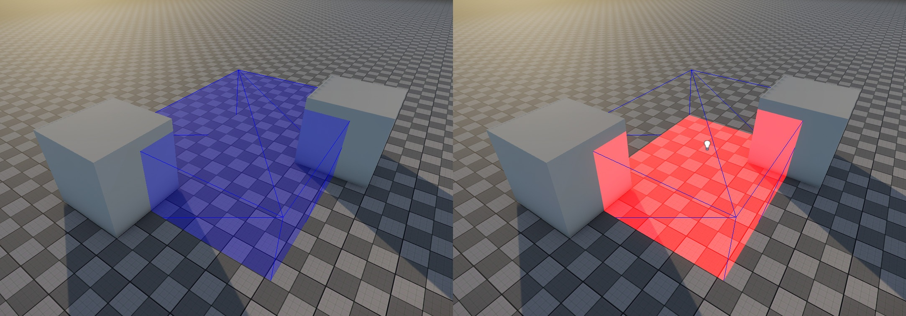
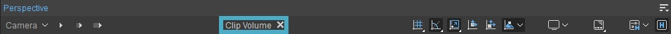
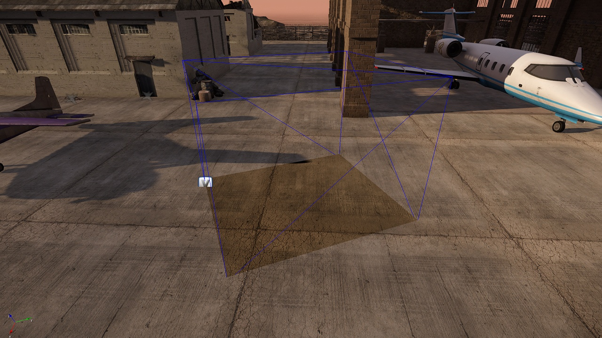
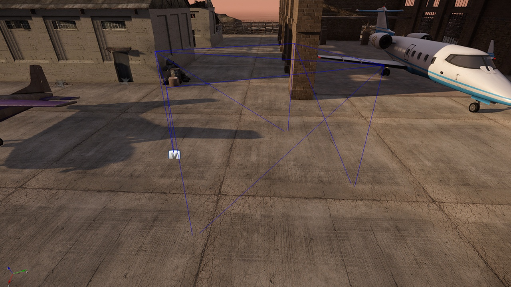

Обзор
Clip Volumes определяет геометрические формы, которые могут ограничить влияние источников света, кубических карт и объемов тумана в мире. Эта функция предназначена для замены устаревших функций световых коробов и отложенных фигур клипов.
В настоящее время мы поддерживаем общие геометрические фигуры как long, как они есть. водонепроницаемость. Обратите внимание, что далее термин «освещение» используется как для освещения, так и для кубических карт.

Слева: громкость клипа, справа: красный свет ограничен громкостью
В CRYENGINE 5.6 и более поздних версиях
- Посмотреть соотношение расстояний доступен для объемов клипов, чтобы обеспечить более эффективное отсечение (это можно настроить в свойствах громкости клипа, как показано ниже).
- Новый квар e_ClipVolumes добавлен, позволяющий отключать громкость клипов (в основном полезно для целей отладки). Это можно включить или отключить, установив e_clipvolumes в 0 или 1 через Консоль.
Свойства
Недвижимость | Описание |
|---|---|
Заполненный | Просто для видимости в редакторе эта опция определяет, должна ли область отображаться как заполненная или нет. |
Игнорировать на улице AO | Игнорирует внешний вид Окружающая окклюзия. |
| Посмотреть соотношение расстояний | Определяет расстояние, с которого можно увидеть громкость клипа. |
Редактирование громкости клипа
Тома клипов можно создать непосредственно в редакторе, перейдя в раздел «Операторы» в свойствах и выбрав Громкость → Редактировать. Затем можно выбрать любую из фигур.
В качестве альтернативы геометрию Clip Volume также можно загрузить из файлов CGF через Загрузить CGF кнопка.
- Как только громкость клипа будет определена с помощью Область -> Громкость клипа, обязательно закройте инструмент в верхней части видового экрана, чтобы предотвратить добавление дополнительных вершин в геометрию.

Тома клипов должны быть водонепроницаемыми и не могут перекрываться.
Ограничение освещения объемами клипа
Источники света можно связать с объемами клипа, разместив источник света непосредственно внутри объема или создав ссылку на объект между источником света и объемом клипа.
Раньше при использовании световых коробов/фигур выполнение ссылки на объект было обязательным, но в Clip Volumes это необязательно, и это значительно упрощает настройку!
После того как ассоциация создана, Влияет только на эту область Свойство источника света будет ограничивать влияние света на геометрию внутри объема клипа.
Одним из примеров могут быть зонды окружающей среды, если для глобального зонда установлено значение Влияет только на эту область тогда громкость клипа закроет окружающее освещение:
 |  |
| Глобальный зонд влияет только на эту область. Правда | Глобальный зонд влияет только на эту область Ложь |
|---|
При редактировании формы или области можно привязать вершину к местности или физическим объектам, используя Ctrl + Shift + LMB.
Это справедливо для всех объектов Area, кроме окклюдеров.
Ограничения
- Сетка Clip Volume должна быть водонепроницаемой.
- Сетка объема клипа сложность влияет на производительность.
- Каждый источник света может быть связан максимум с двумя объемами клипа.
- Тома клипов не должны перекрываться.
- Из соображений производительности объекты, визуализированные вперед, выполняют «внутренний» тест только на основе их точки поворота.